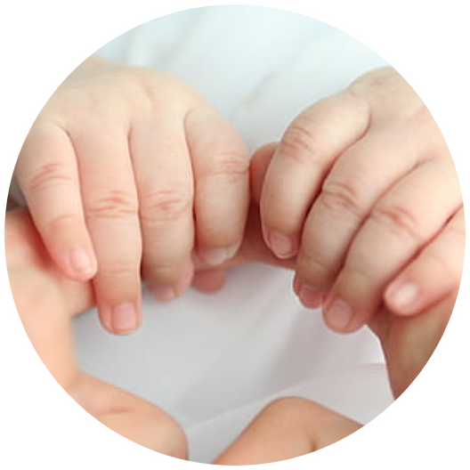
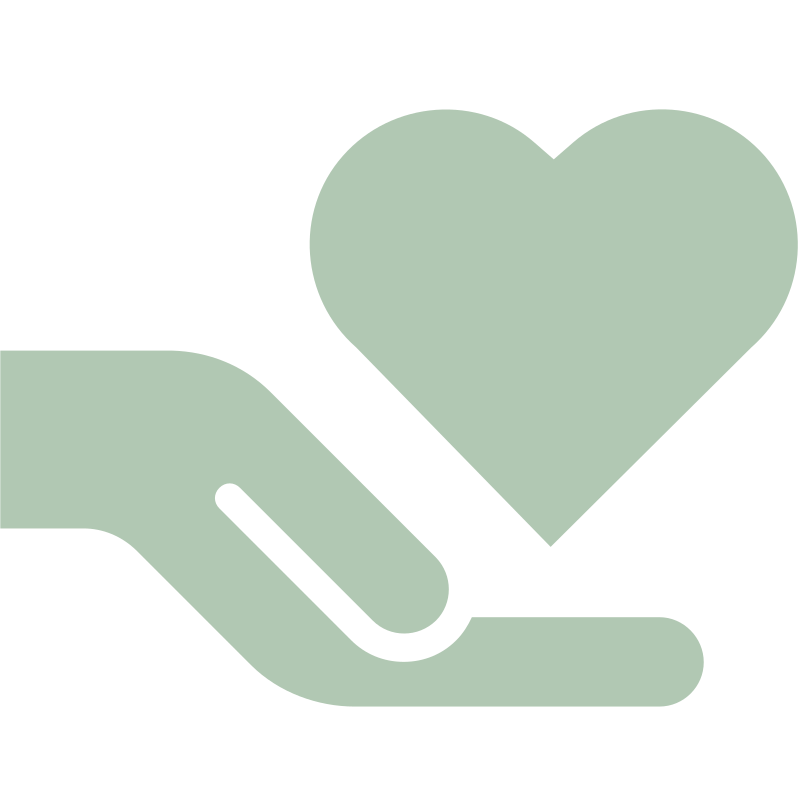
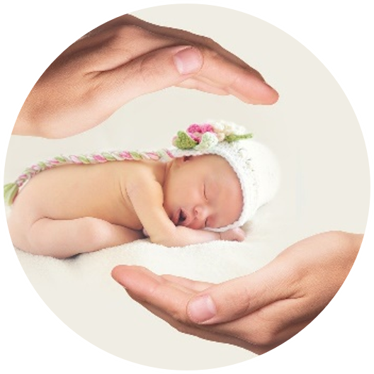
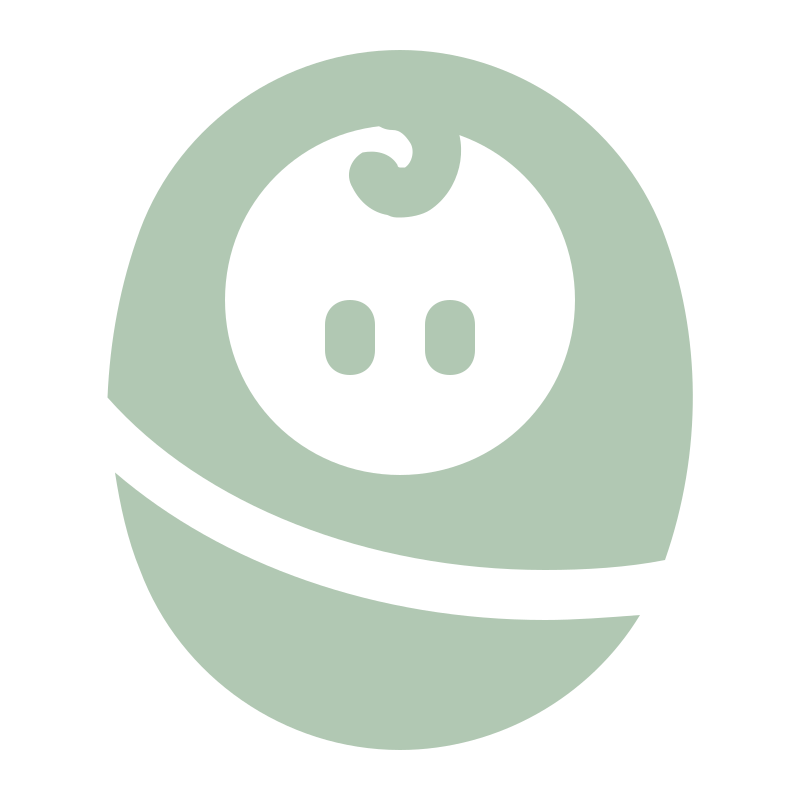
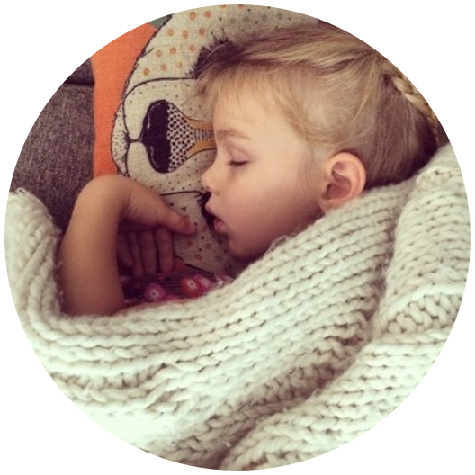
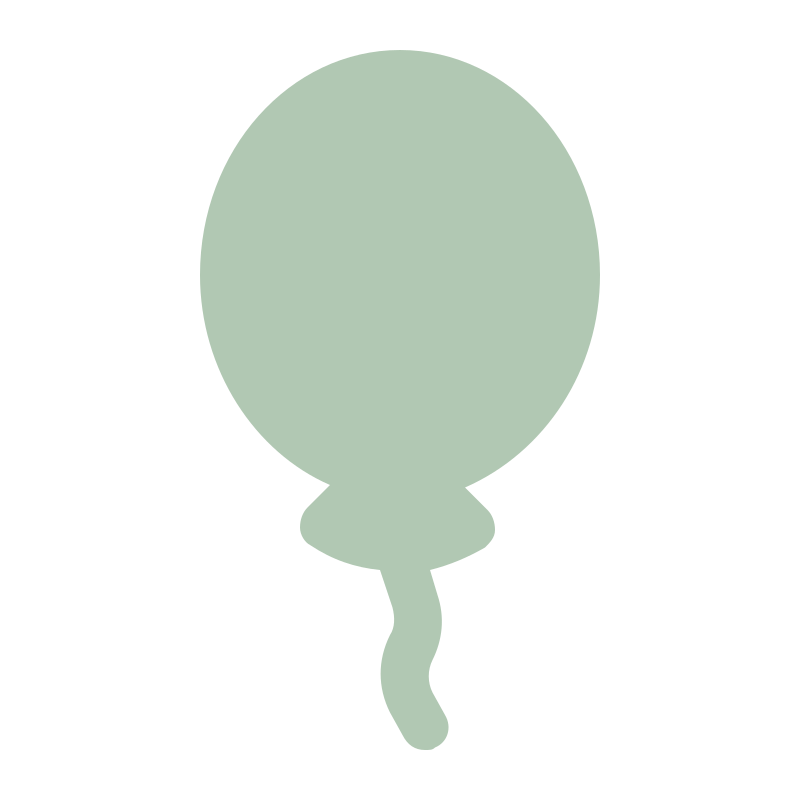
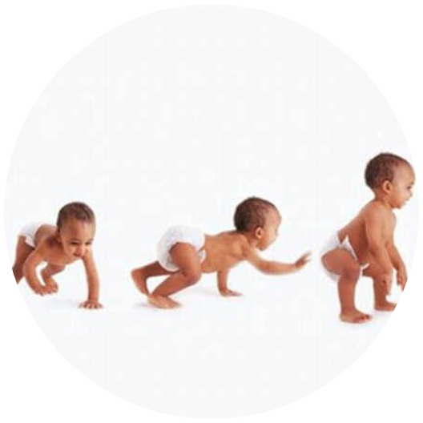
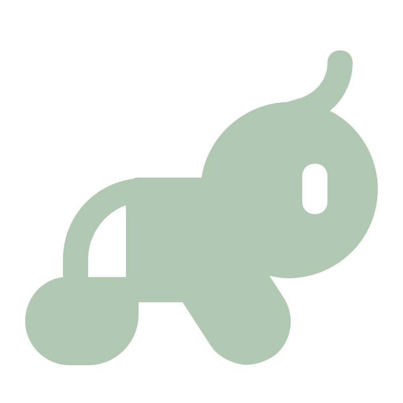

Pilier 01

BienveillanceUn regard doux, une écoute attentive et un respect total de l'enfant.

Pilier 02

Sécurité affectivePour bien explorer le monde, un enfant a besoin de se sentir serein et aimé.

Pilier 03

Respect du rythme de chacunIci, on ne brusque rien. Chaque petit a son propre tempo.

Pilier 04

Autonomie"Aide-moi à faire seul" est notre devise pour encourager les premières réussites.